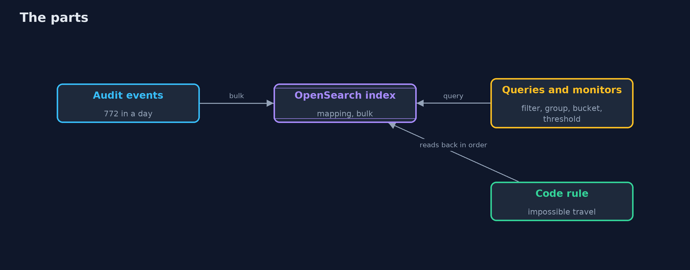
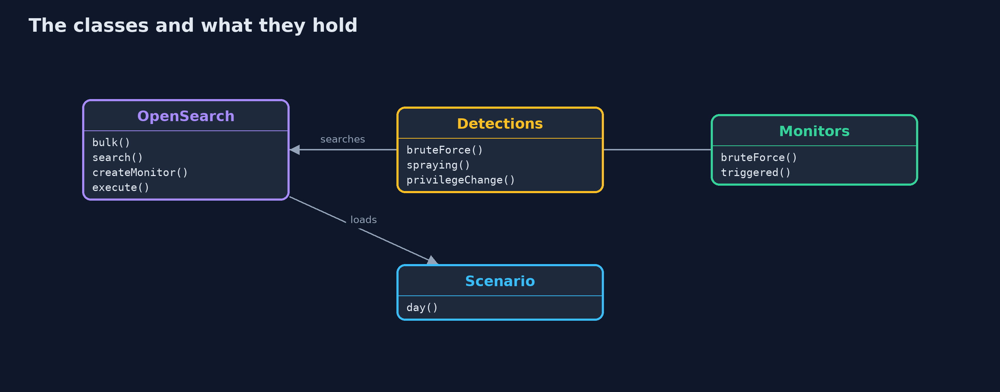
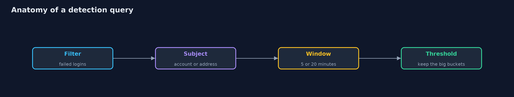
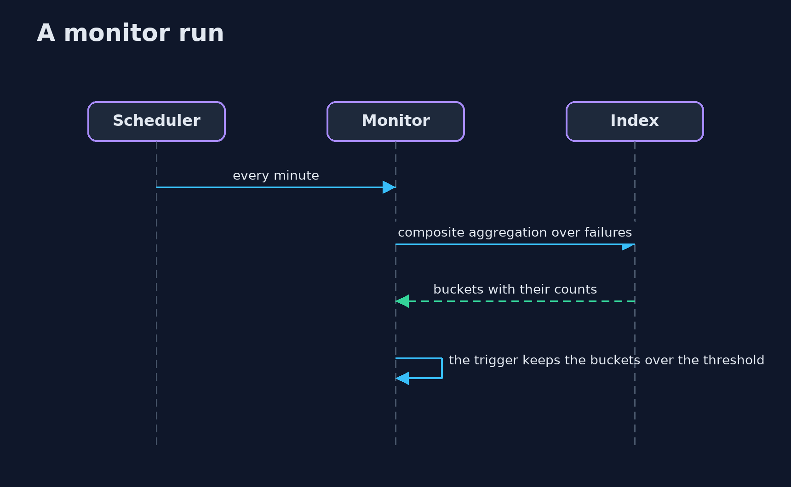

Detecting Attacks with OpenSearch
src/main/java/com/jk/explore/security/searchdetect/
├── Alert.java What a rule reports: which rule, about whom, when, and the events that made it fire
├── City.java A place with coordinates, for distance calculations
├── Detections.java The detections as OpenSearch queries: filters, a terms aggregation for the subject, a date histogram for the window, and a pipeline aggregation that keeps only the buckets over the threshold
├── Event.java One line of the audit log
├── Hit.java One alert from a query: the subject (an account, an address), the window it fell in (or empty), how many events made it, and the real attacks behind it (scoring only)
├── ImpossibleTravelRule.java Two successful logins by one account from places an aeroplane could not connect in the time between them
├── Lab.java A real OpenSearch 3.9 (with its alerting plugin) in a container on a free loopback port, with the security plugin off because this is a lab, removed on close
├── Monitors.java The same detections as monitors of OpenSearch's alerting plugin: a schedule, the query, and a trigger that decides which buckets are alerts
├── OpenSearch.java OpenSearch's HTTP API: indices, bulk loading, searches, and the alerting plugin's monitors
├── OpenSearchDetectDemo.java A sliding five-minute window, as the plain project has, for comparison with fixed buckets
├── Rule.java A detection rule: reads the whole log, in time order, and returns alerts
└── Scenario.java One synthetic Monday for a company with 200 accounts: ordinary logins with a few typos, five VPN users, a traveller, two people who forgot their password after a holiday, ticketed admin grants and one break-glass grant, and four real attacks
A real OpenSearch 3.9 holds one Monday of 772 events and answers the plain project's detections as filter, group, time bucket and threshold: brute force (1 true alert at a threshold of 10), spraying (1), success after failures (2) and privilege change (2, one false), as monitors of the alerting plugin that are run once for repeatable results; impossible travel compares a login with the person's previous one, which a query cannot say, so the events are read back and a few lines of code decide; together the day gives 10 alerts, 8 true, and all four attacks are noticed, but a mapping decides what a rule can say, fixed time buckets miss an attack that crosses their edge, and a monitor changed in a console leaves no trace in the code.
The plain detecting-attacks project writes detection rules in Java and scores them on one synthetic Monday of 772 events with four hidden attacks. This one puts the same Monday in a real OpenSearch 3.9 (Docker, with the alerting plugin; the security plugin is off because this is a lab) and writes the detections as queries. It needs Docker; the tests are tagged integration: ./gradlew integrationTest.
What it shows:
- The day in an index. 772 events through the bulk API (768 logins, 4 role grants), with a mapping: keywords for what a rule filters or groups by, a date for the time. An attack label is indexed only so the lesson can score; no rule reads it.
- A rule is a query. A filter, a terms aggregation for the subject (account or address), a date histogram for the window, and a pipeline aggregation or min_doc_count that keeps the buckets over a threshold. First versions: brute-force(3) 3 alerts, 1 true; spraying(8) 1; privilege-change 2, 1 true; success-after-failures(1) 23 alerts, 2 true.
- Tuning. brute-force at 3, 5, 10, 25, 40: the false alerts go away at 10 and the attack is lost at 40.
- Monitors. The tuned set as bucket-level and query-level monitors of the alerting plugin, each run once with dryrun: brute-force(10) 1, spraying(8) 1, success-after-failures(20) 2, privilege-change 2. Impossible travel compares a login with the same person's previous one, which a query cannot say: the events are read back in order and the plain project's rule decides (4 alerts, 3 true). Together: 10 alerts, 8 true, 2 false, all four attacks.
- The bill. With no mapping an aggregation on a text field is refused; thirty failures that cross a five-minute boundary are 15 and 15 in fixed buckets and no alert at a threshold of 20, but one for a sliding window; monitors changed in a console leave no trace in the code.
Maps to: OWASP Top 10 (2025) A09 Security Logging and Alerting Failures · NIST CSF 2.0 Detect · MITRE ATT&CK (T1110 brute force, T1078 valid accounts, T1098 account manipulation).
The idea in everyday terms
A night guard with a clipboard of questions: how many times has someone failed at this door, how many different doors has one visitor tried. A clipboard is good for counting. It cannot answer "did this person leave Paris an hour ago", which needs someone to remember the last visit.
The scenario
An online store's audit log for one Monday: 772 events, four attacks. The demo writes the guard's clipboard as queries, tunes it, saves it as monitors, and finds the question that the clipboard cannot hold.
Run
./gradlew run
The demo tells the story in 5 acts, each printing exact numbers that the tests check:
| Act | What it shows |
|---|---|
| 1. One Monday of logs, in OpenSearch | 772 events loaded with the bulk API under a mapping of keywords and a date. |
| 2. A first version of each rule, as a query | A filter, a group by the subject, a bucket of time and a threshold: three alerts for brute force at 3, of which one is true. |
| 3. Tuning one threshold | At 10 the false alerts go away; at 40 the attack is lost. |
| 4. The tuned set as monitors of the alerting plugin | Four monitors and one rule in code give 10 alerts, 8 true, and notice all four attacks; impossible travel needs the previous login, which a query cannot say. |
| 5. The bill | A mapping decides what a rule can say, fixed buckets split an attack at their edge, and a console change leaves no trace in the code. |
Test
./gradlew test
19 tests in DemoRunsTest, OpenSearchTest, QueryShapeTest. The scenario and the shapes of the queries are tested with no server. The rest start one OpenSearch for the whole class and remove it (./gradlew integrationTest). They need Docker.
What the simulation got right, and what it left out
OpenSearch is the real server in Docker on a loopback port, loaded with a seeded synthetic day, so the counts are the same on every run. The monitors are run once with dryrun, which sends nothing. Ports and container names are never printed; the demo takes about a minute.
Technologies and versions
Every version below is pinned in the project's build files and was the latest stable release when the project was built.
| Technology | Version | Used for |
|---|---|---|
| Java | 25 | the language and runtime; a Gradle toolchain finds or downloads the JDK |
| Gradle | 9.8.1 (wrapper) | build and run; nothing to install, the wrapper downloads it |
| tools.jackson.core:jackson-databind | 3.1.5 | library the code uses |
| org.junit.jupiter:junit-jupiter | 6.1.3, set by junit-bom | JUnit 5: the tests (tests only) |
| org.junit.platform:junit-platform-launcher | 6.1.3, set by junit-bom | JUnit platform launcher, which Gradle needs to run the tests (tests only) |
| videokit | repository tool (tools/videokit) |
the narrated video and animation: Piper en_US-amy-medium, speed 0.8, longer pauses (the amy-slow voice) |
Learning Material
| Document | What it is for |
|---|---|
| Problem statement | the situation and what the project must show |
| Prerequisites | what you need to know first |
| Detecting Attacks with OpenSearch, explained | the acts in prose |
| Session guide | a one-hour lesson with exercises |
| Animated walkthrough | the acts step by step, narrated |
| Threat model | what is protected, who could harm it, and how, using STRIDE |
| Spec | what this project must be true of |
| Expected output | the golden demo output every test and every port checks against |
The idea in one picture
Events in, queries and monitors on top, code where a query cannot go.

Where each piece sits
The server, the queries and monitors, and the scenario.

How the data moves
Each part of the query is a decision.

Who calls whom, in order

Video
video/detecting-attacks-with-opensearch-explained.mp4 (with .m4a audio and .srt subtitles) is built by video/build_video.sh. Rendered media is not committed.
What it costs
- Every rule needs a mapping that lets it say what it means.
- Fixed time buckets have edges, and attackers do not respect them.
- Thresholds are tuned to one day and drift with the business.
- A query cannot remember: rules about sequences and "the previous event" need code or a different engine.
- A monitor in a console is configuration that nobody reviews.
When this is too much
A shop with one server and a few hundred events a day can read its log. A search engine and alerting pay off when events come from many places, when several rules watch them, and when the rules must be tuned over time.
Where you have already met this
- A Kibana or OpenSearch Dashboards "Discover" screen.
- A saved search with a count and a threshold.
- A rule list in a SIEM with names like "Brute force" and "Impossible travel".
- A false alert at three in the morning.
Where this sits
This is the tools version of detecting-attacks, in the detection-and-response module. Getting the events there is security-logging-with-loki-and-grafana; what to do after an alert is incident-response.